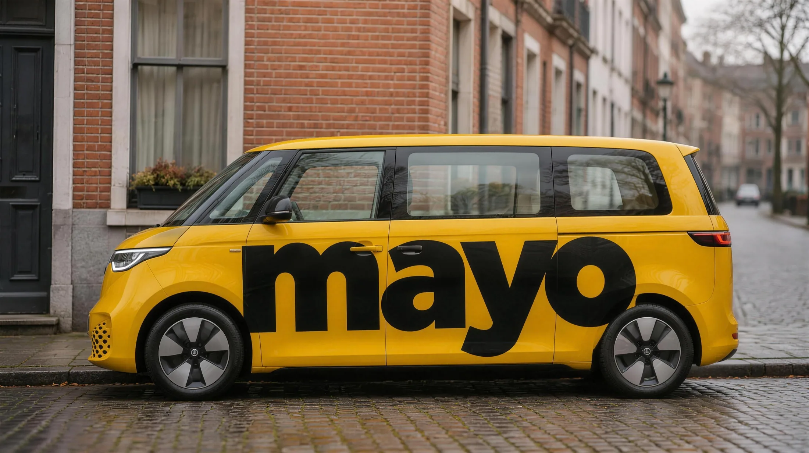
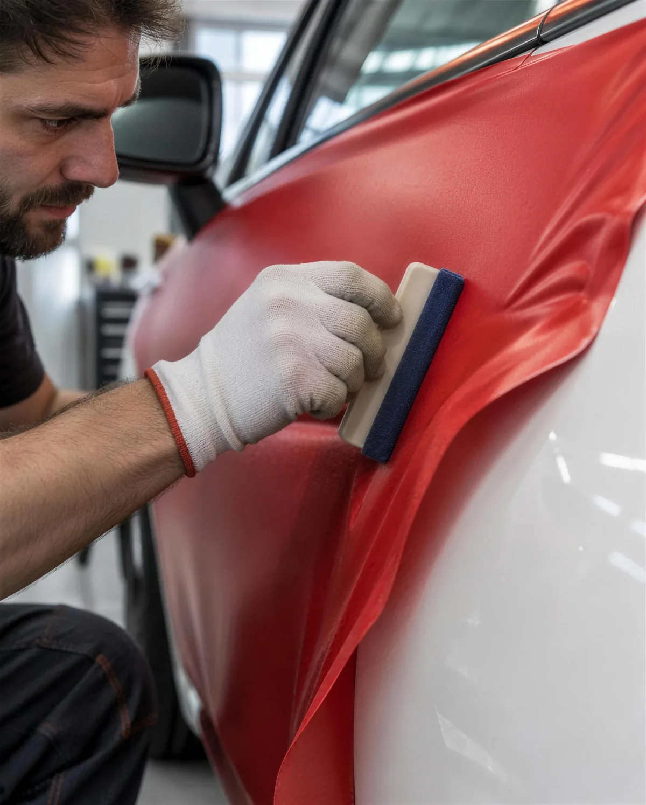
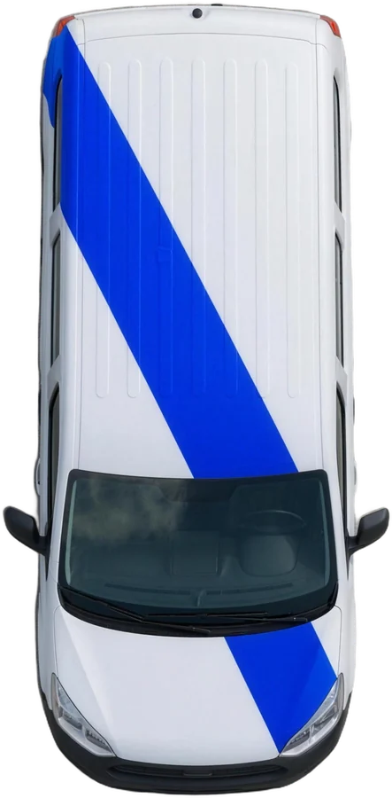

un seul mot, lisible de loin.
flanko
Concevoir ma campagne
votre marque prend la route.
Agence de publicité sur voitures en Belgique. On imagine la campagne, on habille les voitures, elles roulent dans vos zones.

Campagnes fictives, zone donnée à titre d'exemple
Campagne fictive · friterie · Liège
la sauce passe partout.


l'idée
Un message assez court pour être compris à un feu rouge.
le covering
Portières, avant ou carrosserie complète. Jamais sur les vitres.
la route
Des voitures qui circulent là où vos clients vivent.

une ligne suffit.
Une forme simple sur la voiture, et la campagne se reconnaît d'un coup d'œil.
Fin de l'aperçu A. Marques, images et nom sont provisoires.